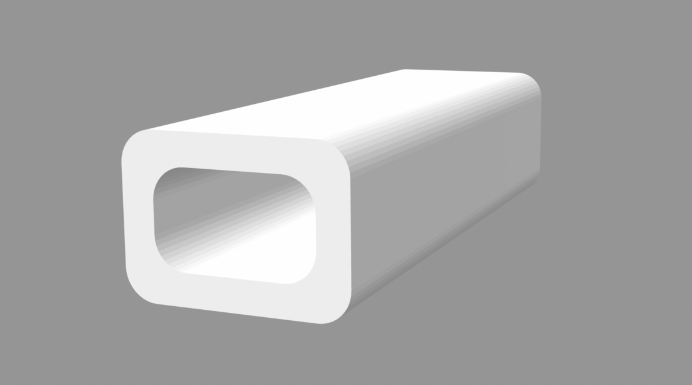
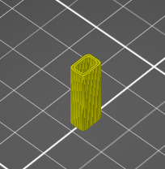
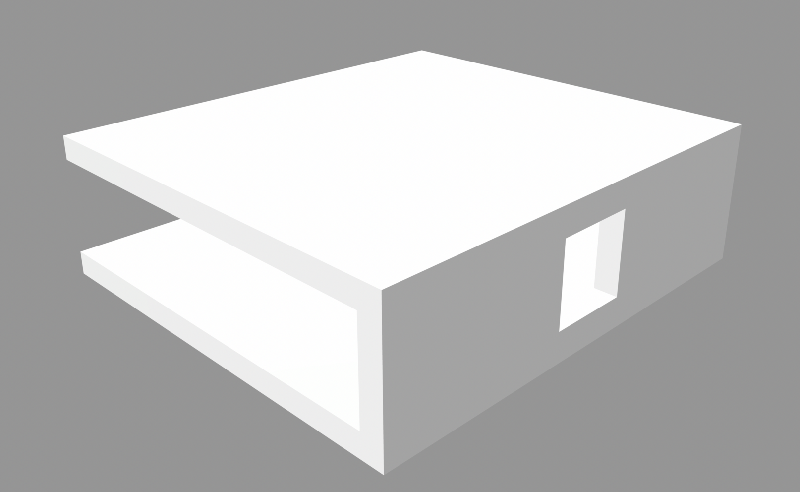
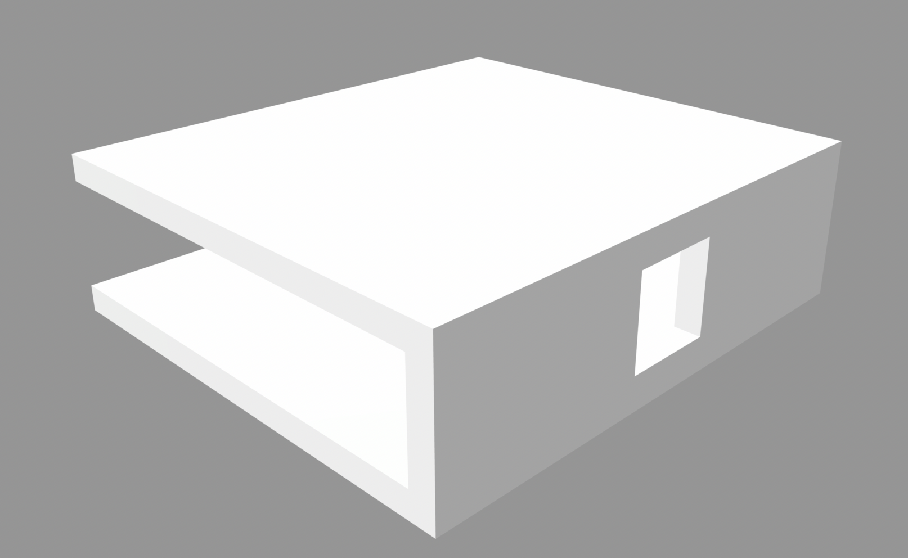
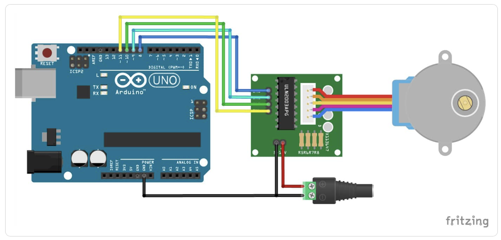

For my MVP, I planned to make a set of motorized shutters that would open and close on a regular schedule. While for my final project it is important that the shutters move depending on input from light and heat sensors, for the MVP I decided to focus more so on the mechanical aspect to make sure I could get that working. I used the laser cutter to make the louvers and frame out of cardboard (in the final product I will use wood, but for right now it was just simpler to use cardboard). I used the drill to make evenly spaced holes along each side of the frame. Then I attached each louver to two dowels on either end and stuck the dowels through the holes, allowing them to rotate freely (see photo below).

The next step was to get all the louvers hooked up to a central rod so they can move in unison. I made the rod using a thin dowel. In connecting each louver to the dowel, it is important that the attachment is tight enough such that the movement of the dowel prompts rotation of the louver, and yet there must also be some degree of freedom because the louvers do not turn with constant radius, and so if the joints are too tight the movement is prohibitively restricted. With real plantation shutters, the rod is attached to the louvers using small interlocked eyelets (one attached to the louver and one to the rod). Since I do not have any of those eyelets, I fashioned my own out of wire. In the future, I believe it might be advantageous to design and 3D print these so they are more standardized (and perhaps also shape the louvers differently such that they include a small loop for the dowel's eyelet to connect to, rather than being a mere rectangle). Nevertheless, for the MVP, the wire worked fine. I made loops of thicker wire that were glued to the edge of each louver, and I friction-wrapped thinner wire around the dowel to make sure it stayed in place and then looped this thinner wire through the hook attached to the louver. It took some trial and error to attach them all properly, but by the end I had a set of 9 louvers that could all be rotated simultaneously simply by moving the dowel up or down.
After this, the next step was to motorize it. I decided to use a stepper motor because the positional specificity is helpful in terms of exactly shifting the shutters to display one side of the louvers versus the other side. When opening and closing the dowels by hand, it is easy to do so simply by pushing the dowel up or moving it down. However, when we do this with our hand, we are instinctively moving the dowel in an arcing motion to accomodate for the changing radius of rotation of the louvers--that is to say, simply pushing the dowel in a straight line is insufficient to properly rotate the dowels. Moreover, I had trouble visualizing how the rotational motion of the motor would translate to the semi-linear motion of the dowel. I considered attaching the dowel to a length of string which would be wound around the motor axle. Thus, the motor spinning would shorten the length of string, pulling the dowel towards it and closing the shutters. However, while this works for closing the shutters, it would not work to open them back up because a string can only be pulled, not pushed. Because of these issues, I decided instead to attach the motor to the axle of one of the louvers. This works because by rotating one of the louvers, all the other louvers rotate simultaneously since they are all connected thanks to the central dowel. Moreover, the rotational movement of the motor axle is much more compatible with the rotational motion of the louver.
At first, I tried to attach the motor to the dowel of the louver using a straw as a connector and gluing them both into the straw. This had worked with my kinetic sculpture, but since the stepper motor seems to move with greater force than the smaller motor I had been using previously, the straw method no longer worked (the glue was not enough to join the straw with the motor axle). As a result, it was necessary to 3D print a small attachment to connect the motor to the louver's dowel. I used calipers to measure the dimensions of the motor axle and designed a joiner accordingly. Here is the piece I printed:
 With this joining piece, whose hole was the exact size and shape of the motor axle, it wasn't even necessary to use glue: I could simply jam the axle into the hole, and it was a perfectly tight fit.
The next problem I encountered was that the axle of the louver was slipping with respect to the louver itself. I had stuck the dowel into the side of the cardboard and secured it with glue, but this connection also was not sufficiently strong. This meant that the motor was turning but the louver was not actually rotating with it. I decided to print another joiner piece to connect the louver to its dowel, so it had to be able to grip the louver and also provide a hole in which to insert the dowel. Here is the piece I ended up creating.
 

This piece was able to clamp to the side of the louver as well as hold onto the dowel, all without any glue, because the dimensions matched exactly. With the addition of these two joiner pieces, I was finally successful at connecting the motor to the louver. Now, the turning of the motor rotated the louver, which in turn rotated all the rest simultaneously. Thus, the motor was able to close the shutters with one side of the louvers facing out, then rotate them 180 degrees until they were closed with the other side of the louvers facing out. I decided to paint one side of the louvers white to illustrate the fundamental purpose of my project. I did a pretty messy job with the painting, but it gets the point across.
In terms of programming the motion of the motor, I looked up the documentation for my speciic type of stepper motor, which was the 28BYJ-48 Stepper Motor with ULN2003 Driver. I set up the circuit according to the schematic shown below:
I borrowed the following example code from the documentation to get the motor spinning clockwise, then counterclockwise on a regular predefined schedule. This worked very nicely to demonstrate the mechanical feasibility of my project thus far.

I then adapted this code to include class organization, based on what I had learned last week setting up my light sensor. I believe this should work; however, I have not yet had time to test it out.

I realize I still need to adapt this code to get rid of the delay feature. However, since ultimately the motion of the motor will be dependent on signals from outside sensors, rather than on a predetermined schedule, I figure I will just get rid of the delay function at the same time that I program it to respond to sensor data. I have not yet had time to do this, but will continue to work on it. I envision a system involving a set of if statements, where the Arduino will be periodically reading signals from a set of light and heat sensors. If the readings reach above a certain threshold, then the "counterclockwise" function will be triggered (or whichever direction is appropriate) and the shutters should remain in that position until the condition of being above the threshold is no longer true. Whenever the reading drops below the threshold, then the "clockwise" function should be triggered, and the shutters should remain in that position until the threshold condition is once again no longer true. I will begin working on this aspect of the coding this coming week. In terms of output device, I currently have the stepper motor and motor driver set up such that a row of 4 LED lights turn on whenever the motor is properly connected to power. In the future, I want to make it such that the lights only turn on when the motor is actively turning, thus acting as a signal to bystanders that the shutters are at work.
There is definitely still a lot of work to be done. However, I am pleased with what I have done with the MVP so far, and I feel I have successfully proven that the mechanical aspect of my project will work. Here is a video of the shutters in action.